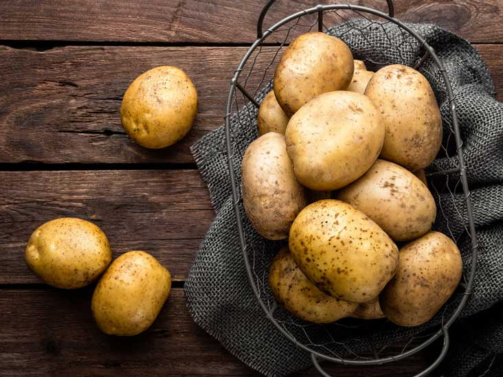
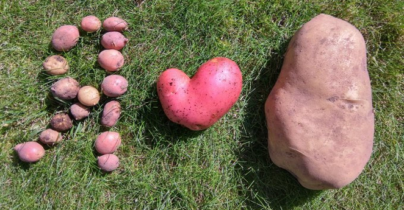
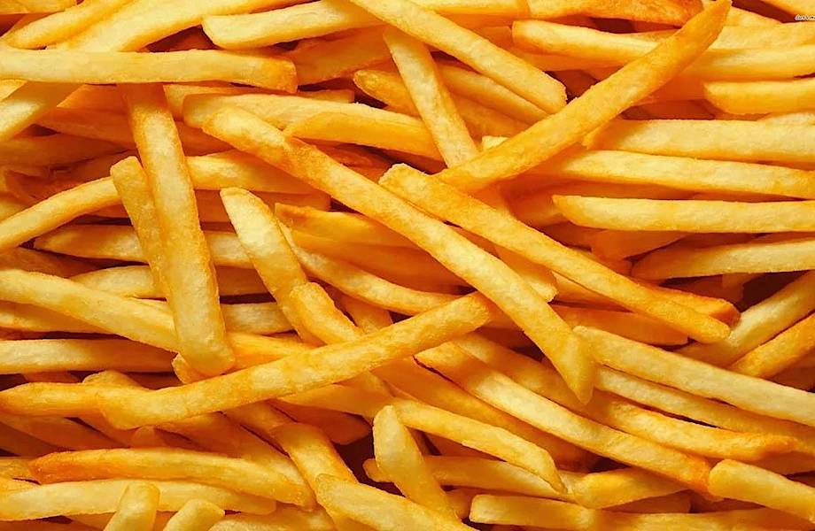

Каталог
Картошка!

Картофелем называют травянистый многолетник семейства Паслёновые и его клубни. Плоды картофеля ядовиты, представляют собой небольшие круглые ягоды, напоминающие плоды физалиса или мелкие томаты. Клубни картофеля различаются по величине и форме, в зависимости от сорта встречаются круглые, продолговатые или месяцеподобные, размером с куриное яйцо и достигающие весом до полкилограмма (calorizator). С биологической точки зрения клубень – это разросшаяся почка, которая состоит из клеток, наполненных крахмалом, с тонкой кожурой. Цвет кожуры картофеля бывает практически белый, песочный, розовый и красно-фиолетовый, мякоть клубней – белая, кремовая или жёлтая.
Родина картофеля – Южная Америка, где питательный корнеплод использовали почти 10 тысяч лет назад. До сих пор в некоторых районах Боливии встречаются дикорастущие кусты картофеля. В Европе картофель появился в середине XVI века с испанскими конкистадорами, в Россию попал благодаря Петру I в конце XVII столетия, в первое время использовался только в знатных семьях. В настоящее время картофель выращивают как однолетнее растение, на второй год оставляют только для получения семян. Картофель занимает одно из лидирующих мест в списке привычных и часто употребляемых продуктов питания.
Картошка,картошка!

Картофель большей частью состоит из крахмалов, присутствуют в его составе отлично сбалансированный набор аминокислот, витамины группы В, С, Н и РР, фолиевая кислота, а также практически все полезные минеральные вещества: калий, кальций, магний, цинк, селен, медь и марганец, железо, хлор и сера, йод, хром, фтор, молибден, бор и ванадий, олово и титан, кремний, кобальт, никель и алюминий, фосфор и натрий. Картофель содержит много калия. Картофель способствует снижению уровня холестерина в крови и препятствует возникновению холестериновых бляшек на стенках сосудов. Клетчатка, содержащаяся в продукте, не агрессивна и не раздражает стенки желудка, поэтому варёный картофель входит в меню лиц, страдающих гастритами и язвой. Полезен картофель для тех, у кого имеются заболевания, связанные с нарушением обмена веществ, ведь продукт в организме работает как щёлочь, нейтрализуя действия кислот. Поэтому блюда из картофеля рекомендуют людям с артритом и подагрой, почечными заболеваниями.
Наиболее полезен картофель, приготовленный в кожуре – отваренный в мундире или запечённый, в таком продукте сохраняются практически все витамины и минералы. Размятый горячий картофель – отличный компресс от кашля, также поможет при экземах и воспалительных заболеваниях кожных покровов. Сырой картофель, натёртый на тёрке, прикладывают к ожогам, грибковым и рожистым поражениям, он обладает успокаивающим и заживляющим действием.
Картошка,картошка,картошка!

Для того, чтобы варёный картофель получился рассыпчатым и ароматным, а картофельное пюре – нежным и воздушным, нужно выбирать определённые сорта картофеля, с высоким содержанием крахмалистых веществ. Бронницкий, Синеглазка, Вестник, Голубизна, Сотка, Орбита, Лорх, Темп – некоторые примеры картофеля, который лучше использовать для варки и запекания в духовке. Сорта с низким содержанием крахмала – отличный выбор для приготовления супов и салатов, это такие сорта, как: Лидер, Киевский, Эффект, Невский, Свитанок, Калинка, Ред Скарлет. Чтобы во время жарки ломтики картофеля сохранили форму, нужно выбирать сорта с высоким содержанием сухого вещества, то есть Колобок, Импала, Фелокс, Брянский ранний. Обычно для жарки выбирают сорта с красно-фиолетовой шкуркой и жёлтой сердцевиной, перед приготовлением нарезанный картофель нужно промыть холодной водой, чтобы смыть излишки крахмала и затем обсушить, тогда ломтики не слипнутся.
Счастливые обладатели дачных погребов хранят картофель в ящиках с песком, так продукт не прорастает и не замерзает даже в сильные морозы. Жителям обычных квартир, если есть большой запас картошки, нужно хранить её в прохладном месте (например, на застеклённом балконе), проверяя, чтобы не попала влага.